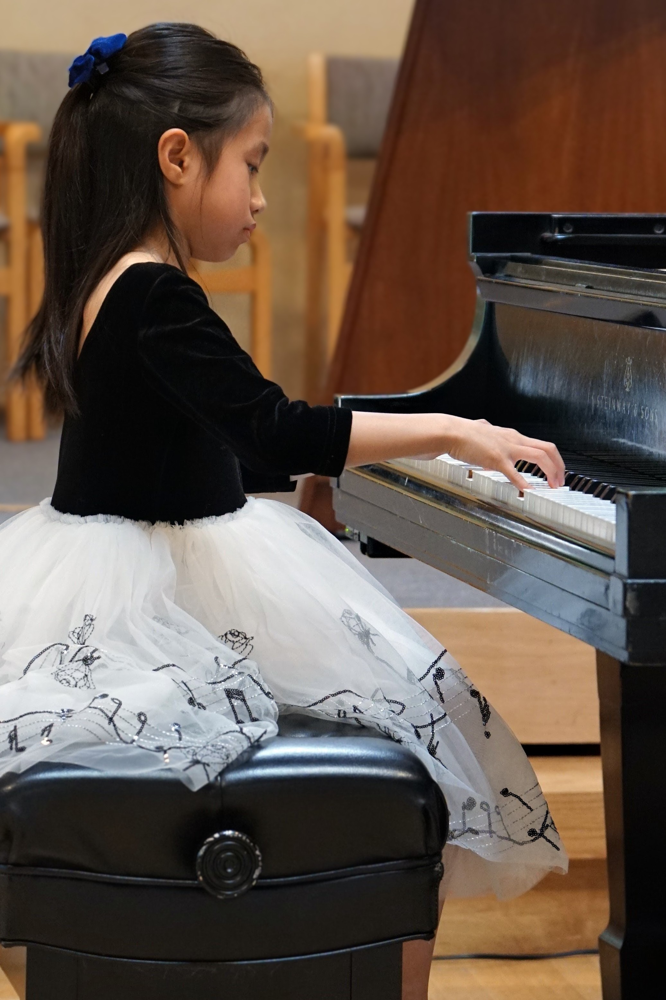

The Suzuki method, known as the "mother-tongue approach", enables an early beginning to music instruction. Children can start lessons as young as three years old. The method focuses on developing coordination, technique, memory, and musicianship.
Children learn music through listening, similarly to learning their native language. Listening immersion establishes a model of the desired sound, facilitating detailed playing without the need for excessive analysis or verbal instruction.
Thoughtful repetition of learned repertoire helps accumulate sophisticated repertoire from the very beginning. Children continue to play old pieces in order to master technique and refine musical expression. Technique is taught within musical context.
Parental involvement is the key to successful music instruction. A parent is present at each lesson. Parental note taking and observation allow the parent to guide listening and practice at home.
Reading skills develop slower than playing skills, just as speaking skills precede writing and reading. Children develop vocabularies of hundreds of words long before they are able to read or write. Likewise, the Suzuki method takes advantage of the incredible ability of young children to learn and memorize without allowing reading to become an impediment. Gradually, musical reading skills catch up through the measured use of traditional teaching methods.
Piano study not only provides children musical skills, but also persistence, discipline, memory, coordination, and accountability.
Dr. VanPelt offers weekly private Suzuki piano lessons in Princeton, NJ, as well as traditional piano instruction. In addition to lessons, students participate in studio performance classes, recitals, and local music events.